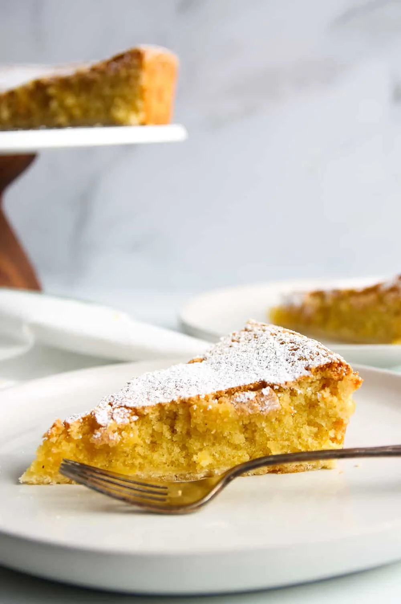

Almond Tart

Description
his flourless cake from Galicia, Spain, is traditionally made with separated eggs and flavored with citrus and/or cinnamon. We liked it made more simply, with whole eggs and just a small measure of vanilla and almond extracts. A sprinkling of chopped almonds and coarse raw sugar on top of the batter gives the surface a chewy-crisp crust that contrasts wonderfully with the dense, plush crumb of the cake’s interior. Crème fraîche and fresh berries are perfect accompaniments.
The apple and almond go so well together too.
Make it a day ahead then just reheat it when you are ready to serve.
Ingredients
4 eggs
250g sugar
Pinch of ground cinnamon
71 shot of rum
50g softened butter
1 tablespoon of icing sugar
Instructions
- Preheat the oven to 170C
- Whisk the eggs with the sugar until pale and frothy. Add the ground almonds, cinnamon, rum and softened butter and whisk until you have a soft creamy mixture.
- Grease and line a round springform cake tin with about a 30cm diameter.
- Pour in the cake mix.
- Bake in the preheated oven for about 35 minutes or until firm to the touch.
- Allow to cool in the tin for a few minutes before turning onto a wire rack and dusting with icing sugar.